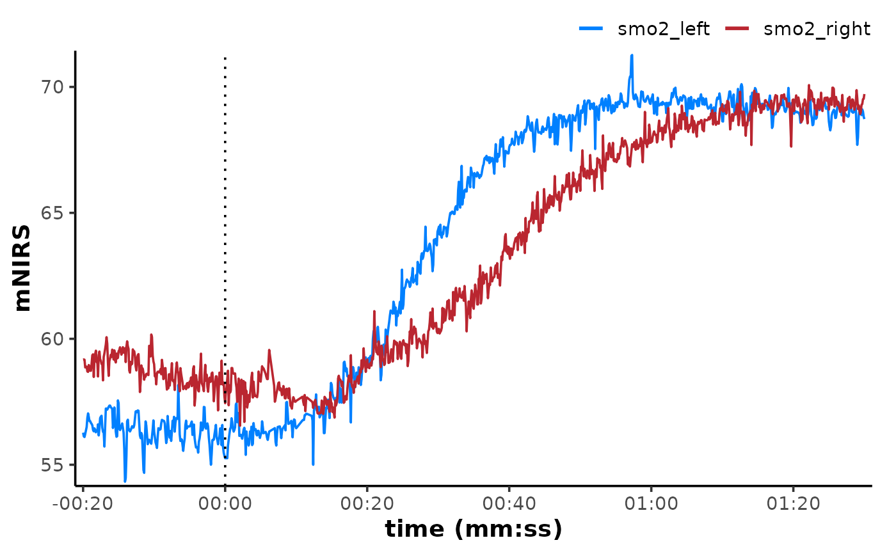

Detects and extracts intervals around specified events from time series data for analysis.
Arguments
- data
A data frame of class "mnirs" containing time series data and metadata.
- nirs_channels
A
list()of character vectors indicating mNIRS channel names to operate on within each interval (see Details). Must match column names indataexactly. Retrieved from metadata if not defined explicitly.- time_channel
A character string indicating the time or sample channel name. Must match column names in
dataexactly. Retrieved from metadata if not defined explicitly.- event_channel
An optional character string indicating the event or lap channel name. Required if
event_labelsare specified. Must match column names indataexactly. Retrieved from metadata if not defined explicitly.- sample_rate
An optional numeric value for the exported sample rate in Hz. If not defined explicitly, will be estimated from the data (see Details).
- event_times
A numeric vector of
time_channelvalues indicating event starts (see Details).- event_labels
A character vector of strings to match from
event_channel, indicating event starts.- event_samples
An integer vector with sample indices (row numbers) indicating event starts.
- span
A
list()of two-element numeric vectors specifying the interval around each event asc(before, after), in units oftime_channel(see Details).- group_events
Either a character string or a
list()of numeric vectors specifying how to group intervals. Interval numbers are sorted in order of appearance withindata."distinct"Will extract each interval as an independent data frame (the default).
"ensemble"Will perform ensemble-averaging across all detected intervals for each
nirs_channel, and return a single data frame.list(c(1, 2), c(3, 4))Will perform ensemble-averaging across intervals within each group and return a data frame for each group.
- zero_time
A logical to re-calculate
time_channelfrom zero or preserve the originaltime_channelvalues (FALSE, the default).- verbose
A logical to display (the default) or silence (
FALSE) warnings and information messages used for troubleshooting.
Value
A named list() of tibbles of class
"mnirs" with metadata available with attributes().
Details
nirs_channels = list() can be used to specify unique data channels
(column names) to operate on within intervals, according to group_events
(see below).
Channels can be specified in seperate list items (e.g.
list(c("A", "B", "C"), "B", c("A", "C"))) to include or exclude from specific intervals. In this way, bad data channels in a single interval can be excluded from contaminating the ensemble-averaging.
event_* arguments can be used to identify intervals of interest in data,
and can be specified three ways (methods can be combined):
event_timesNumeric time values in units of
time_channel.event_samplesInteger sample indices (row numbers).
event_labelsCharacter patterns to match in
event_channel, case-sensitive and must match exactly.
Every unique event detected in
datawill be extracted according to thespaninterval window around it (see below). Events can be specified in any order. The detected intervals will be extracted and returned in the order in which they appear.
span = list() will accept two-element numeric vectors indicating the
interval time window around each detected event, in units of
time_channel, e.g. seconds.
span = c(before, after)will typically have a negativebeforevalue, extending the interval window before the target event, and a positiveaftervalue, extending the interval window after the target event, resulting in an interval window between[event - span[1], event + span[2]]. However,spanwill accept any positive or negative values with reference to the target event, as long as the range is contained within the bounds of the availabledata.Example for three intervals:
event_times = list(60, 120, 300)span = list(c(-30, 30), c(30, 90), c(-60, 0))-
Interval 1 would range from
30to90seconds.Interval 2 would range from
150to210seconds.Interval 3 would range from
240to300seconds.
group_events = list() can be used to specify the grouping structure of
intervals and return either discrete or ensemble-averaged intervals.
"distinct"Will extract each interval as an independent data frame.
"ensemble"Will perform ensemble-averaging across all detected intervals for each
nirs_channel, and return a single data frame.list(c(1, 2), c(3, 4))Will perform ensemble-averaging across intervals within each group and return a data frame for each group.
Any interval numbers omitted from
group_eventswill be extracted as a distinct data frame. Interval numbers beyond the number of detected intervals will be ignored.group_eventswill accept a named list and pass on those names to the list of returned data frames<under development>, e.g.group_events = list(low = c(1, 2), high = c(3, 4))
Otherwise, default names will be returned as
"interval_1","interval_2", etc. for distinct intervals;"ensemble"for ensemble-averaging across all intervals; or"group_1_2"etc. for custom grouping structure.
List items or a single vector (e.g. nirs_channels = list(c("A", "B")) or
span = c(-30, 30)) will be recycled forward for all intervals. If the
number of intervals detected exceeds the number of list items, the last
specified list item will be recycled forward to the additional intervals.
List items beyond the number of detected intervals will be ignored.
zero_time = TRUE will re-calculate numeric time_channel values
to start from zero at the target event, for each interval. Ensemble-
averaged interval times will always be zeroed. Effectively, this works best
when the event marker indicates the start of the interval. This can
return unexpected time values when the event marker itself is not
included in the interval range (e.g. with span = c(30, 60)).
Examples
options(mnirs.verbose = FALSE)
## read example data
data <- read_mnirs(
example_mnirs("train.red"),
nirs_channels = c(
smo2_left = "SmO2 unfiltered",
smo2_right = "SmO2 unfiltered"
),
time_channel = c(time = "Timestamp (seconds passed)"),
zero_time = TRUE
) |>
resample_mnirs() ## avoid issues ensemble-averaging irregular samples
## extract intervals as a list of data frames
extract_intervals(
data,
nirs_channels = list(c(smo2_left, smo2_right)),
event_times = c(368, 1093), ## specify interval events
span = list(c(-20, 90)), ## specify the event start-end timespans
group_events = "distinct", ## return all unique intervals
zero_time = TRUE ## start time from zero
)
#> $interval_1
#> # A tibble: 1,101 × 3
#> time smo2_left smo2_right
#> <dbl> <dbl> <dbl>
#> 1 -20 55.6 60.9
#> 2 -19.9 55.8 60.7
#> 3 -19.8 56.1 60.6
#> 4 -19.7 56.3 60.4
#> 5 -19.6 56.6 60.3
#> 6 -19.5 56.8 60.1
#> 7 -19.4 56.6 60.1
#> 8 -19.3 56.9 59.8
#> 9 -19.2 56.7 60.1
#> 10 -19.1 56.2 59.8
#> # ℹ 1,091 more rows
#>
#> $interval_2
#> # A tibble: 1,101 × 3
#> time smo2_left smo2_right
#> <dbl> <dbl> <dbl>
#> 1 -20 56.2 57.2
#> 2 -19.9 55.7 57.4
#> 3 -19.8 55.3 57.0
#> 4 -19.7 55.3 58.6
#> 5 -19.6 55.3 58.8
#> 6 -19.5 55.3 57.9
#> 7 -19.4 55.3 59.1
#> 8 -19.3 55.3 59.0
#> 9 -19.2 55.3 57.6
#> 10 -19.1 55.7 57.4
#> # ℹ 1,091 more rows
#>
## ensemble-average across multiple intervals
interval_list <- extract_intervals(
data,
nirs_channels = list(c(smo2_left, smo2_right)),
event_times = c(368, 1093),
span = list(c(-20, 90)),
group_events = "ensemble", ## return ensemble-averaged intervals
zero_time = TRUE
)
library(ggplot2)
plot(interval_list[[1L]], label_time = TRUE) +
geom_vline(xintercept = 0, linetype = "dotted")
